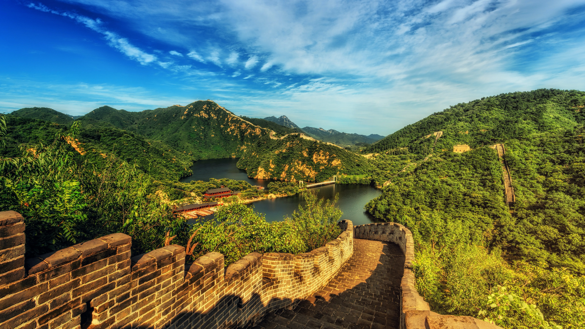

Greece
Has everything you need for a summer vacation: the Mediterranean Sea, warm climate, delicious food, good wine and many historical sights. The coastline of Greece is about 9,000 miles long. There are many good beaches on the coast, where tourists like to spend time. 🇬🇷
MoreJapan
A land of contrasts, Japan is a fascinating destination for visitors. Combining the attractions of an ancient and unfamiliar culture with all the trappings of one of the world powerhouses in entertainment, fashion, and innovation, Japan is a journey of discovery wherever you go. 🇯🇵
MoreRomania
Enjoy great natural beauty and diversity and a rich cultural heritage. Romania enchants visitors with its scenic mountain landscapes and unspoiled countryside areas, and also with its historic cities and its busy capital. 🇷🇴
MoreSouth Korea
Boasts abundant tourist attractions. Tourists can experience distinctive harmony between historical cultural heritage and modern culture. With these preserved local identities, tourists can also explore and enjoy local cultures, natural environments, and unique food. 🇰🇷
MoreChina
Boasts a lot of wonderful attractions including antique sites and relics, imposing imperial palaces, delicate water towns, amazing natural wonders, splendid cultural heritage, and diversified folk customs. It will take years to visit all, but it is fairly easily to tour the top tourist attractions. 🇨🇳
More Dominican Republic
Discovered in 1492 by Christopher Columbus, the country overflows with fascinating history, museums and exciting cultural experiences like music, art and festivals, plus uniquely Dominican specialties such as cigars, rum, chocolate, coffee, merengue, amber and larimar. 🇩🇴
MoreEgypt
Is a land shrouded in mystery. From the ancient pyramids of Giza to the meandering Nile River – Egypt is undeniably a place to be adding to your bucket list. This country has had a varied past. When the Romans set foot in Egypt over 2000 years ago, the pyramids were already considered to be historical ruins. 🇪🇬
MoreScotland
Is a beautiful country well known for its dramatic scenery of mountains and valleys, rolling hills, green fields and forests, and rugged coastline. Scotland has lively and friendly cities, often of great architectural significance, and a rich history and heritage dating back thousands of years with many ancient and historic sites. ğŸ´ó §ó ¢ó ³ó £ó ´ó ¿
MoreSwitzerland
The country is famous for its scenic Alps and its rolling hills, plains, and lakes. It is also renowned for its chocolates and watches, while the Swiss knife is a legend in itself! Tourism in Switzerland is a delight of skiing, snow-walking, gorging on chocolates and cheeses and of course, swaying in the Alps. 🇨ğŸ‡
MoreItaly
Fifth country in the world, and third in Europe, in terms of worldwide international tourist arrivals, Italy attracts millions of tourists every year thanks to its fascinating culture, natural landscapes, artistic sites, renowned cuisine and much more. 🇮🇹
More